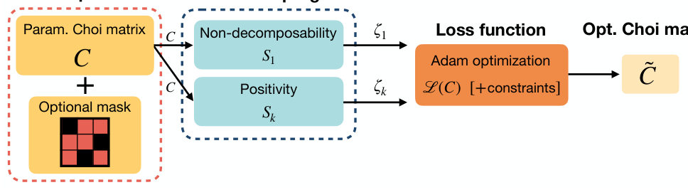
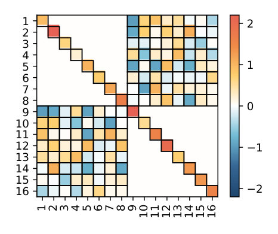
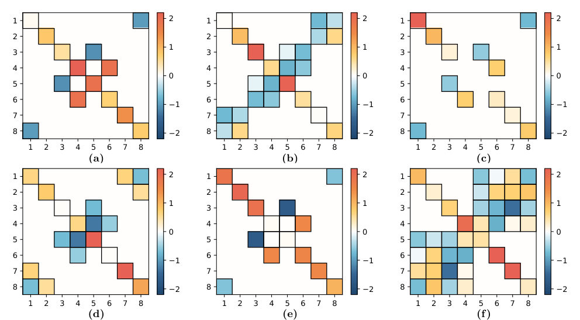

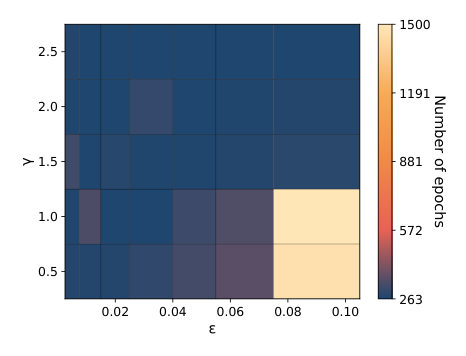
← Index · ← Previous · Next →
Authors: Meguebel Mohamed, Maxime Federico, Louis Garbe, Nadia Belabas, Nicolas Fabre
Type: theory · Category: other · PDF: https://arxiv.org/pdf/2605.14096v1
Analysis basis: full PDF text, analyzed in chunks
Topic relevance: methods for driven-dissipative 3/5 · Keldysh / 2PI / non-Gaussian methods 2/5 · Tavis-Cummings & cavity-many-emitter 2/5
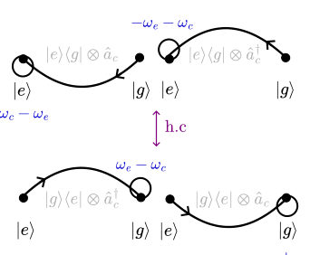
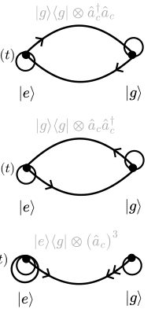
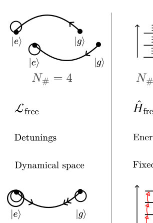
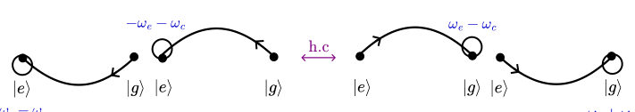
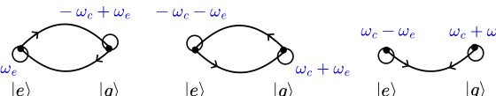
Summary. This paper proposes a new theoretical framework that treats light-matter transitions, rather than states, as the primary objects of dynamics. This approach simplifies the derivation of high-order effective Hamiltonians and reveals that the dispersive regime is a reorganization of resonant polaritonic hybridization. It successfully identifies an intrinsic, photon-number-independent Rabi frequency in the operator-centric description.
Why it may be interesting. It provides a more efficient, transparent, and unified way to derive effective Hamiltonians for complex light-matter interactions without the need for complex unitary transformations or Hilbert space truncation, which is highly relevant for cavity and waveguide QED.
Main problem. The difficulty of tracking high-order processes and deriving effective Hamiltonians in the dispersive regime using traditional state-centric methods, which can become computationally overloaded.
Main result. The introduction of a transition-centric framework that unifies resonant and dispersive regimes, revealing a photon-number-independent intrinsic Rabi frequency and persistent polaritonic hybridization.
Method. A transition-operator diagrammatic perturbation theory in Liouville space, using JLM (Jaynes-Cummings-Liouville) transition operators as fundamental building blocks and Laplace space transformations for time-dependent weights.
Model / system. A two-level atomic system coupled to a cavity mode, described by the Rabi and Jaynes-Cummings Hamiltonians, including both rotating-wave and counter-rotating terms.
Key observables. Intrinsic Rabi frequency, Stark shifts, Bloch-Sizable shifts, and the polaritonic joint population operator.
Important parameters / regimes. Coupling strength (lambda), detuning (Delta), atomic frequency, and cavity frequency; regimes include resonant, dispersive, and ultrastrong coupling.
Assumptions / limitations. The expansion is valid in the dispersive regime where coupling is small compared to detunings; the operator subspace is assumed to be closed by including the joint population term.
Figures summary. Figure 1 provides a 2D representation of JLM transition operators and a zeroth-order diagram for the quantum Rabi interaction showing detunings.
Paper structure. The paper introduces a new transition-centric framework, develops a diagrammatic perturbation theory for higher-order effective Hamiltonians, applies the method to the Jaynes-Cummings and Rabi models, and demonstrates the unification of resonant and dispersive dynamics.
We introduce a framework where light-matter transitions, rather than states, are the primary dynamical objects. Successive compositions of elementary transitions yield multiphoton processes with compact diagrammatic bookkeeping of resonant and off-resonant pathways. This approach enables transparent derivations of effective high-order Hamiltonians in the dispersive regime, foundational to quantum-information applications. Applied to the paradigmatic Jaynes-Cummings model, our framework reveals a photon-number-independent intrinsic Rabi frequency and persistent polaritonic hybridization in the dispersive regime, unifying resonant and dispersive limits.
Authors: Laurens Walleghem
Type: theory · Category: quantum information and computing · PDF: https://arxiv.org/pdf/2605.14538v1
Analysis basis: full PDF text, analyzed in chunks
Topic relevance: quantum measurements 3/5 · entanglement & information structure 2/5
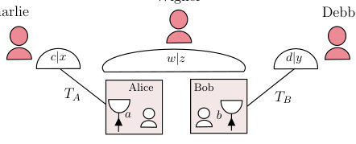
Summary. This paper presents a theoretical argument showing that if an observer is treated as a quantum system, their experimental choices cannot be considered absolute. By merging Wigner's friend paradoxes with the PBR theorem, the author demonstrates that 'free choice' must be a relational property rather than an absolute one.
Why it may be interesting. This is interesting for researchers in quantum foundations and open quantum systems as it challenges the fundamental status of experimental agency and explores the limits of observer-independent reality in complex quantum networks.
Main problem. The paper investigates whether the 'free choices' (experimental settings) of observers are absolute or relative when those observers are internalized as quantum systems within a Wigner's friend-style setup.
Main result. The author derives a contradiction against the absoluteness of free choices by combining the Local Friendliness (LF) no-go theorem with the Pusey-Barrett-Rudolph (PBR) argument, suggesting that free choices must have a relational nature.
Method. The study uses a theoretical construction that combines the PBR scenario with an extended Wigner's friend setup, employing entanglement swapping and logical contextuality arguments to derive a contradiction at the possibilistic level.
Model / system. The model involves a multi-agent setup with two friends (Alice and Bob) in sealed labs, a super-observer (Wigner), and external observers (Charlie and Debbie) interacting with qubits (TA and TB) that encode the friends' choices.
Key observables. Measurement outcomes for the agents (a, b, c, d, w) and measurement settings (x, y, z).
Important parameters / regimes. The choice amplitudes (alpha and beta) and the distinction between the computational and X-basis measurements.
Assumptions / limitations. The argument relies on the assumptions of Local Agency, Absoluteness of Observed Events (AOE), and the validity of the PBR theorem and quantum universality.
Figures summary. A sketch of the protocol combining the Wigner's friend scenario with the PBR argument.
Paper structure. The paper introduces the Wigner's friend problem, defines the extended setup using the PBR framework, presents the mathematical derivation of the contradiction against the absoluteness of free choices, and discusses the implications for quantum interpretations.
Wigner's thought experiment illustrates quantum theory's measurement problem by considering an observer who measures a quantum system inside a sealed lab, modeled unitarily by an outsider. Recent extensions of this thought experiment, referred to as extended Wigner's friend arguments, question how different observers can reason consistently about each other in quantum setups, and challenge the absoluteness of the outcome value obtained by the friend under a notion of locality. In this work, we present an argument against the absoluteness of free choices under the same notion of locality, using an extended Wigner's friend scenario based on the Pusey--Barrett--Rudolph theorem. Similar arguments based on other contextuality or nonlocality models are possible.
Authors: Xiao-Chuan Wu, Pok Man Tam, Xuyang Liang, Zenan Liu, Dao-Xin Yao, Zheng Yan, Shinsei Ryu
Type: both · Category: strongly correlated electrons · PDF: https://arxiv.org/pdf/2605.13971v1
Analysis basis: full PDF text, analyzed in chunks
Topic relevance: analog quantum simulation 3/5 · entanglement & information structure 2/5
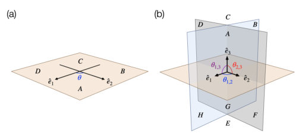
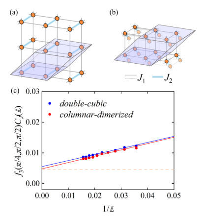
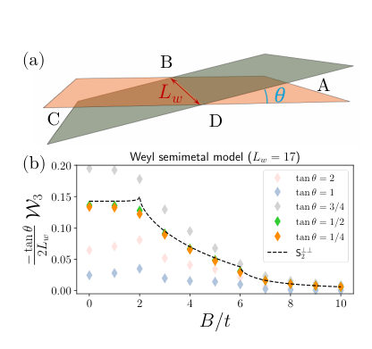
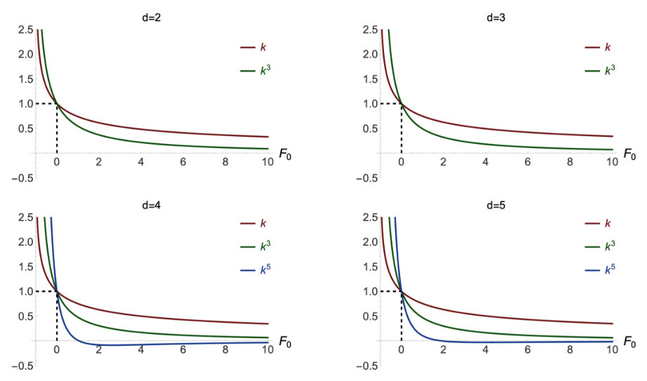
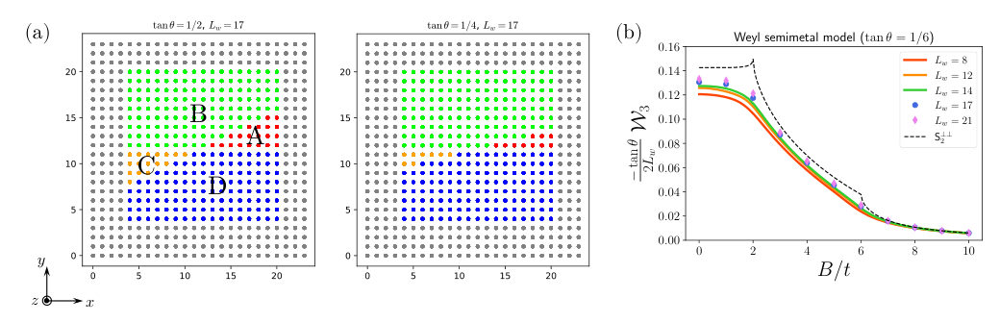
Summary. This paper extends the theory of corner charge fluctuations to three and higher dimensions, providing a universal framework to study quantum geometry and criticality. By analyzing trihedral corners and wedges, the authors show how to extract the many-body quantum metric and identify dimension-dependent scaling laws. The results are validated through Quantum Monte Carlo simulations of Heisenberg and Weyl semimetal models.
Why it may be interesting. This work is highly relevant for many-body dynamics and AMO physics as it provides a theoretical foundation for using real-space correlation measurements, such as those in quantum gas microscopy, to probe universal quantum geometry and criticality in higher dimensions.
Main problem. The paper aims to generalize the framework of corner charge fluctuations from two spatial dimensions to higher dimensions (d >= 3) and to develop a protocol for extracting many-body quantum geometry in 3D.
Main result. The authors derived a universal angle dependence for trihedral corners in 3D and identified a wedge-corner contribution that probes the quantum metric, while establishing dimension-dependent scaling laws for insulators, CFTs, and metals.
Method. The study combines analytical derivations using Gram matrices and multi-region subtraction schemes with numerical Quantum Monte Carlo simulations of Heisenberg and Weyl semimetal models.
Model / system. The work investigates various many-body systems including the Columnar-Dimerized (CD) and Double-Cubic (DC) AFM Heisenberg models at the O(3) quantum critical point, as well as a lattice Weyl semimetel model.
Key observables. Bipartite charge fluctuations (second cumulant of the disorder operator), dimensionless corner contribution (C3), universal angle function (f3), and the quantum metric (S2).
Important parameters / regimes. Spatial dimensions (d >= 3), corner/wedge angles, radial moment (Upsilon_d), and the distinction between insulating, conformal (CFT), and metallic regimes.
Assumptions / limitations. The derivation assumes continuous translation symmetry and rotationally invariant (isotropic) systems, and assumes the analyticity of the static structure factor in even dimensions.
Figures summary. Figures illustrate the Heisenberg models used, finite-size extrapolations of the angle function, the real-space partition scheme for wedge-corner fluctuations, and the scaling of the disorder operator.
Paper structure. The paper introduces the problem of higher-dimensional fluctuations, provides analytical derivations for 3D trihedral corners and general d-dimensional parallelotopes, presents numerical validation using QMC on spin models, demonstrates quantum metric extraction via Weyl semimetals, and concludes with scaling analysis across different phases of matter.
Measuring charge fluctuations within a subregion provides a powerful probe of quantum many-body systems. In two spatial dimensions, the shape dependence of the dimensionless corner contribution encodes universal data of quantum critical points and reveals observables of quantum geometry in various quantum phases. Here, we systematically extend this framework to higher dimensions. In three dimensions, we derive the universal angle dependence associated with trihedral corners of a generic parallelepiped and benchmark the predictions against Monte Carlo simulations of lattice models at the O(3) quantum critical point. We further identify a wedge-corner contribution that directly probes the quantum metric, supported by numerical results for a lattice Weyl semimetal model. More generally, we obtain angle functions for polyhedral corners of arbitrary parallelotopes in general dimensions and clarify the scaling of the corner contribution across phases of matter. While insulators and conformal critical points exhibit similar behavior across dimensions, metals display a characteristic even-odd dimensional effect.
Authors: Angela Rosy Morgillo, Davide Poderini, Fabio Anselmi, Fabio Benatti, Massimiliano F. Sacchi, Chiara Macchiavello
Type: theory · Category: quantum information and computing · PDF: https://arxiv.org/pdf/2605.14644v1
Analysis basis: full PDF text, analyzed in chunks
Topic relevance: entanglement & information structure 3/5 · methods for driven-dissipative 2/5




Summary. The authors present a new optimization method using differentiable semidefinite programming to systematically generate positive non-decomposable quantum maps. This framework allows for the discovery of new map families and provides numerical evidence for long-standing conjectures in quantum information theory. It effectively automates the search for complex mathematical structures used to detect bound entanglement.
Why it may be interesting. This work provides a powerful new numerical tool for exploring the geometry of quantum channels and entanglement, which is directly relevant to understanding the structure of open quantum systems and entanglement detection.
Main problem. The difficulty of systematically constructing positive, non-decomposable linear maps, which are essential for detecting bound entangled states.
Main result. The development of a differentiable SDP framework that successfully generates new numerical examples of non-decomposable maps, identifies a new parametrized family of maps, and provides numerical evidence for the PPT square conjecture.
Method. An optimization framework using differentiable semidefinite programming (SDP) layers within a gradient-based loop (Adam optimizer) to minimize a loss function based on positivity and non-decomposability certificates.
Model / system. Linear maps between finite-dimensional Hilbert spaces, represented via the Choi-Jamiołkowski isomorphism using Choi matrices.
Key observables. Positivity certificates (via k-symmetric extensions), non-decomposability witnesses (zeta_1), and trace-preservation properties.
Important parameters / regimes. Input and output dimensions (d, d'), extension order (k), and loss function hyperparameters (epsilon, gamma, omega, nu).
Assumptions / limitations. The use of k-symmetric extensions provides a sufficient but not necessary condition for positivity, which may exclude some valid maps.
Figures summary. Figure 1 shows the optimization framework flow; Figure 2 displays Choi matrices and masks; Figure 3 shows real non-decomposable maps; Figure 4 shows convergence relative to hyperparameters; Figures 5-7 illustrate the evolution of loss functions and SDP objectives during training.
Paper structure. The paper introduces the problem of non-decomposable maps, presents the differentiable SDP optimization framework, details the loss function engineering and masking techniques, demonstrates results including new map families and conjecture testing, and discusses limitations and future work.
Positive maps that are not decomposable are a key resource in entanglement theory because they can detect bound entangled states, yet systematic methods for constructing them remain limited. We introduce an optimization framework based on differentiable semidefinite programming (SDP) for generating positive non-decomposable maps under flexible structural constraints on their Choi matrices. The method combines SDP-based certificates of non-decomposability and positivity with gradient-based optimization, enabling a systematic search over maps with different input and output dimensions. Within this framework, we generate previously unknown numerical examples, identify a parametrized family of maps arising from masked Choi matrices, and construct real non-decomposable maps. We further show that the same approach can be adapted to explore open questions in quantum information theory, including the PPT square conjecture and recently proposed eigenvalue bounds for 2-positive trace-preserving maps.
Authors: Natsuki Kariya
Type: theory · Category: quantum information and computing · PDF: https://arxiv.org/pdf/2605.14432v1
Analysis basis: full PDF text, analyzed in chunks
Topic relevance: quantum measurements 3/5 · interference shaping light 2/5
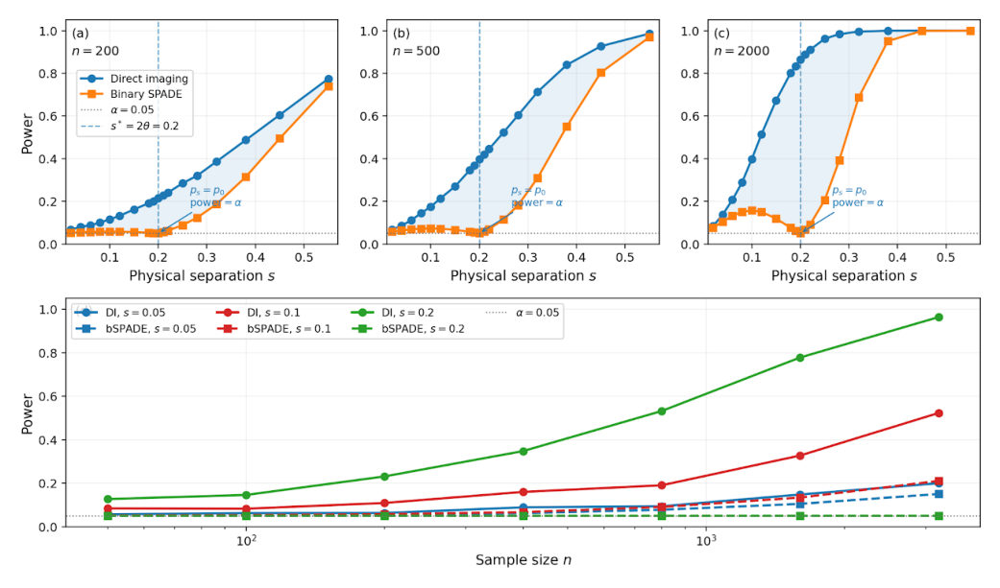
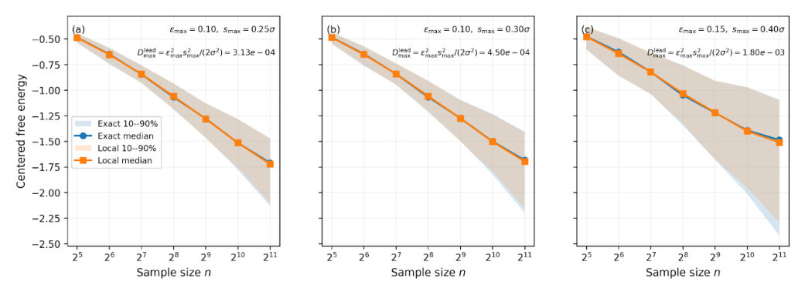
Summary. The paper uses Singular Learning Theory to analyze the asymptotic performance of SPADE versus direct imaging for detecting closely spaced, weak light sources. It reveals that while SPADE is theoretically superior in ideal conditions, detector misalignment can lead to a collapse in detection power and allow direct imaging to perform better in practical finite-photon regimes.
Why it may be interesting. This paper is highly relevant to quantum optics and quantum sensing as it provides a rigorous mathematical framework (SLT) to understand why ideal quantum-optimal benchmarks (like SPADE) may fail to provide advantages in practical, misaligned, finite-photon scenarios.
Main problem. Investigating the performance of Spatial-Mode Demultiplexing (SPADE) versus direct imaging for discriminating between one and two incoherent point sources in the singular regime of weak and closely spaced emitters.
Main result. The study identifies that while aligned SPADE has a universal subleading advantage due to different multiplicity in the singular expansion, misaligned SPADE can be outperformed by direct imaging in finite-photon regimes and exhibits a 'blind separation' point where power collapses.
Method. Application of Singular Learning Theory (SLT) to analyze zeta-function poles, real log canonical thresholds, and Bayes free-energy asymptotics, supplemented by Monte Carlo simulations.
Model / system. A one-dimensional diffraction-limited imaging system with a Gaussian point-spread function (PSF) used for discriminating between a single source (null) and two incoherent sources (alternative) with relative brightness epsilon and separation s.
Key observables. Log Bayes factor, Bayes free-energy difference, mode labels (q) in SPADE, and detection positions (Xi) in direct imaging.
Important parameters / regimes. Relative brightness (epsilon), spatial separation (s), detector misalignment (theta), number of photons (n), and PSF width (sigma).
Assumptions / limitations. Assumes a Gaussian PSF and uses a physically motivated reduction of full SPADE to a binary-SPADE model in the sub-Rayleigh regime.
Figures summary. The figures likely show comparisons of Bayes free energy and power between direct imaging and SPADE, including plots of the 'blind separation' effect and the scaling of power on different intrinsic scales.
Paper structure. The paper introduces the source discrimination problem, defines the aligned and misaligned models, applies Singular Learning Theory to derive asymptotic expansions for both cases, validates these asymptotics with numerical simulations, and concludes with the physical implications of model singularity.
We study far-field discrimination between one and two incoherent point sources in the singular regime of weak and closely spaced emitters. Under ideal alignment, spatial-mode demultiplexing (SPADE) attains the quantum-optimal large-sample Stein exponent, but the finite-photon behavior near the one-source boundary and the effect of realistic imperfections remain less understood. Using singular learning theory, we analyze both the aligned and misaligned problems. In the aligned Gaussian case, we derive the zeta-function poles for direct imaging and SPADE, show that both share the same real log canonical threshold $λ=1/2$ but differ in multiplicity, and obtain the corresponding Bayes free-energy asymptotics. This yields a universal subleading advantage of aligned SPADE in the local prior-weighted regime. In the misaligned setting, we study a physically motivated binary-SPADE reduction that retains the full leading $O(s^2)$ leakage contrast near alignment, with corrections from the detailed higher-mode redistribution entering only at $O(s^4)$. We show that misaligned binary-SPADE and direct imaging acquire nontrivial local power on different intrinsic scales, $s=O(n^{-1/4})$ and $s=O(n^{-1/2})$, respectively. However, finite-$n$ Neyman--Pearson comparisons under common physical conditions reveal that direct imaging is stronger on the plotted grids and that misaligned binary-SPADE exhibits an exact blind separation $s^\ast=2θ$, where its power collapses to $α$. These results identify model singularity as a structural organizing principle for finite-photon quantum discrimination and clarify how ideal aligned SPADE benchmarks can fail to translate into finite-$n$ advantages under misalignment.
Authors: Ivan V. Panyukov, Evgeny S. Andrianov
Type: theory · Category: quantum information and computing · PDF: https://arxiv.org/pdf/2605.14807v1
Analysis basis: full PDF text, analyzed in chunks
Topic relevance: interference shaping light 3/5 · methods for driven-dissipative 2/5
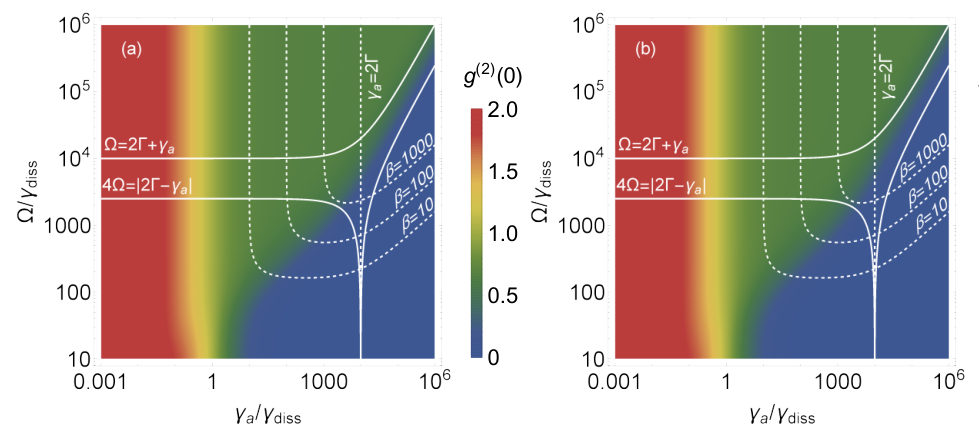
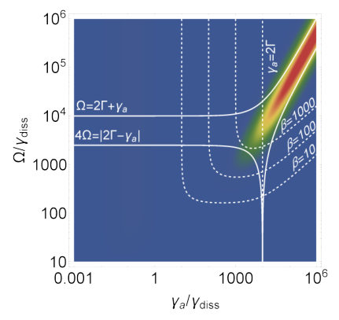
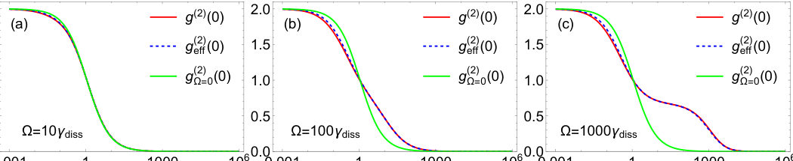
Summary. The paper shows that the impact of a cavity on a single-photon source's photon statistics can be accurately modeled as simple spectral filtering. This effective model remains valid even in the strong-coupling regime, except when extreme energy transfer rates trigger significant non-Markovian effects.
Why it may be interesting. This paper is highly relevant to researchers in quantum optics and open quantum systems as it provides a simplified analytical tool for predicting photon statistics in integrated photonic circuits, while precisely defining the boundaries where non-Markovian dynamics necessitate more complex models.
Main problem. The paper investigates whether the strong coupling between a single-photon source and a cavity (acting as a spectral filter) significantly alters the photon statistics beyond simple spectral filtering, specifically regarding the influence of the filter on the source's internal dynamics.
Main result. The authors demonstrate that an effective analytical model treating the cavity solely as a Lorentz spectral filter is accurate for most parameter regimes, even in strong coupling, provided that cavity-induced non-Markovian effects do not dominate.
Method. The study uses a three-way comparison between a rigorous numerical Lindblad master equation approach, an effective analytical model with modified relaxation rates, and a simplified model that neglects the filter's influence on the source dynamics.
Model / system. The system consists of a two-level system (TLS) undergoing incoherent pumping, coupled to a single-mode cavity via the Jaynes-Cummings Hamiltonian. The dynamics are described by a Lindblad master equation incorporating TLS decay, pure dephasing, cavity decay, and incoherent pumping.
Key observables. The second-order autocorrelation function g2(0) of the cavity emission.
Important parameters / regimes. Rabi constant (Omega), TLS decay rate (gamma_diss), cavity linewidth (gamma_a), pure dephasing rate (gamma_deph), pumping rate (gamma_pump), and the efficiency parameter (beta) representing the ratio of energy transfer to losses.
Assumptions / limitations. The cavity mode is initially vacuum; the cavity acts as a Lorentz spectral filter; the TLS is incoherently pumped; the cavity frequency is resonant with the TLS transition frequency.
Figures summary. Figure 3 demonstrates the validity of the analytical approach for Rabi frequencies up to 100 times the TLS decay rate.
Paper structure. The paper introduces the problem of coupling single-photon sources to cavities, presents the theoretical framework (Hamiltonian and Master Equation), develops the effective analytical model, compares the three different modeling approaches across various coupling regimes, and identifies the limits of the effective model's validity.
One of the most common approaches for coupling optical single-photon sources and photonic integrated circuits is to use a cavity. The cavity acts as a spectral filter that distorts the light spectrum and changes its statistical properties. But in the general case one should take into account not only spectral filtering of light but also the spectral filter influence on the single-photon source dynamics. We build an effective analytical model for description of the cavity influence on the photon statistics of light emitted by the single-photon source as spectral filtering only. We show that this model correctly describes the photon statistics even in a strong-coupling regime between the single-photon source and the spectral filter. Our results can be useful for analytical modeling of photon statistics of quantum emitters strongly coupled to various electromagnetic interfaces.
Authors: Yan He, Chih-Chun Chien
Type: theory · Category: quantum gases · PDF: https://arxiv.org/pdf/2605.14985v1
Analysis basis: full PDF text, analyzed in chunks
Topic relevance: analog quantum simulation 3/5
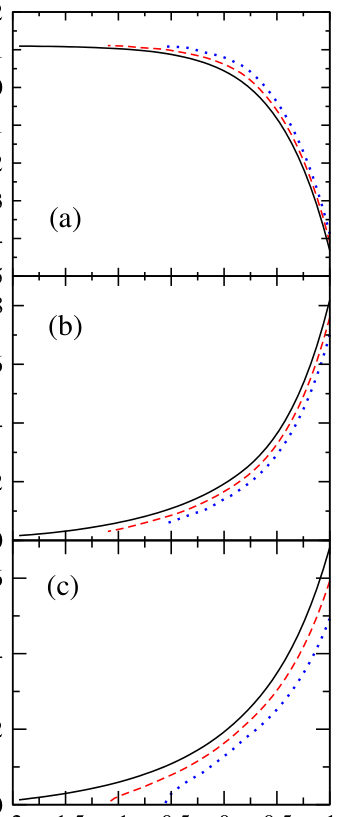
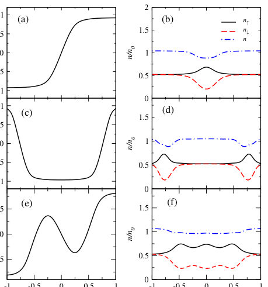
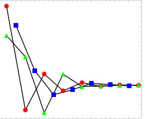
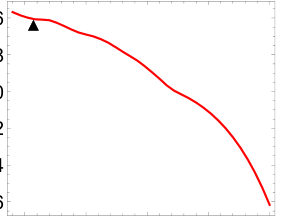
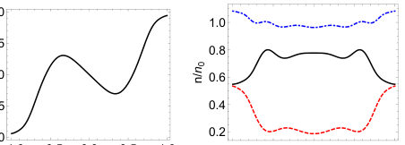
Summary. This paper examines how the LOFF state behaves when a spin-polarized Fermi gas is placed on a spherical surface. It demonstrates that while spatial modulation can accommodate population imbalance, the LOFF phase is fragile and only stable near the breakdown of uniform superfluidity. The study highlights how compact, curved geometries influence the stability of inhomogeneous quantum phases.
Why it may be interesting. This work is relevant to many-body dynamics and AMO physics as it explores how geometric curvature and topological constraints influence the formation of inhomogeneous superfluid phases in ultracold atomic gases.
Main problem. The study investigates the existence, stability, and spatial structure of the Larkin-Ovchinnikov-Fulde-Ferrell (LOFF) state in a population-imbalanced Fermi superfluid confined to a thin spherical shell.
Main result. The researchers found that LOFF states with multiple nodes can become energetically favorable at high spin polarization, though the phase is fragile and exists only near the boundary where uniform superfluidity vanishes.
Method. The Bogoliubov-de Gennes (BdG) formalism is used, expanding quasiparticle wavefunctions in spherical harmonics and solving the resulting matrix equations iteratively.
Model / system. A two-component, spin-polarized atomic Fermi gas with pairing interactions confined to a 2D thin spherical surface, modeled using a BCS mean-field Hamiltonian.
Key observables. Order parameter (gap function) spatial modulation, spin-resolved densities, total density profiles, and the grand potential.
Important parameters / regimes. Spin polarization (p), interaction strength (-ln(k_F a)), chemical potentials, and angular momentum quantum number (l).
Assumptions / limitations. The study assumes zero temperature (T=0), contact pairing interactions, the BCS mean-field approximation, and azimuthal symmetry.
Figures summary. Figures show phase boundaries for uniform vs. non-uniform solutions, spatial profiles of the order parameter and densities for various LOFF states, and energy comparisons of the grand potential across different polarizations.
Paper structure. The paper introduces the problem of LOFF in curved geometry, describes the BdG formalism and spherical expansion, presents the phase diagram and stability analysis, details the spatial structure of LOFF nodes, and concludes with a discussion on the fragility of the state.
By implementing the Bogoliubov-de Gennes (BdG) formalism of population-imbalanced atomic Fermi gases with pairing interactions in a thin spherical shell, we characterize the Larkin-Ovchinnikov-Fulde-Ferrell (LOFF) state in such a compact geometry. We first construct a phase diagram showing where uniform solutions of spin-polarized Fermi superfluid from the BdG equation cease to exist due to the vanishing order parameter. Near the boundary, various LOFF states with spatially modulating order parameters and density profiles can survive as convergent solutions to the BdG equation. When both uniform and LOFF solutions are present, we compare their grand potentials to determine the energetically favorable state and find that the LOFF states with multiple nodes in the order parameter become more stable at higher spin polarization. However, the LOFF state only survives close to the phase boundary where the uniform solutions vanish, indicating fragility of the LOFF state on a spherical surface. We also briefly discuss possible implications.
Authors: Ming Xu, Yihao Chen, Ji Guan
Type: theory · Category: numerical methods · PDF: https://arxiv.org/pdf/2605.14356v1
Analysis basis: full PDF text, analyzed in chunks
Topic relevance: entanglement & information structure 3/5
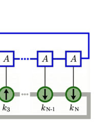
Summary. This paper proposes a new spatial logic called Linear Chain Logic (LCL) to formally verify properties of 1D quantum many-body states as a function of system size. By leveraging the transfer-operator structure of Matrix Product States, the authors develop an efficient algorithm to detect asymptotic patterns like correlation decay and phase transitions. This work bridges the gap between quantum model checking and the numerical analysis of tensor networks.
Why it may be interesting. It provides a formal, logic-based verification layer for tensor network simulations, allowing researchers to systematically certify the asymptotic behavior and stability of many-body states as they approach the thermodynamic limit.
Main problem. The lack of a formal framework for verifying spatial and size-dependent properties of 1D many-body states (Matrix Product States) as the system size grows.
Main result. The introduction of Linear Chain Logic (LCL) and an approximate model-checking algorithm that can automatically verify properties like state validity, correlation decay, and phase transitions in MPS families.
Method. A transfer-operator-based approach that reduces MPS properties to the spectral analysis of a completely positive map, using semilinear over/under-approximations to compute evidence sets for LCL formulas.
Model / system. One-dimensional periodic Matrix Product States (MPS) representing ground states of translationally invariant 1D local Hamiltonians, such as the TFIM, XXZ, and Kitaev models.
Key observables. Squared norms, correlation functions, energy differences, decay ratios, and indicators for phase transitions or symmetry breaking.
Important parameters / regimes. System size (N), bond dimension (D), spectral radius, and peripheral eigenvalues.
Assumptions / limitations. The logic is specifically designed for periodic MPS families; the algorithm relies on approximations due to the undecidability of the Skolem problem; the 'Until' operator is excluded from the logic syntax.
Figures summary. Tables showing the decision results (True/False/Unknown/Timeout) and runtimes for various synthetic and physical MPS models across different bond dimensions.
Paper structure. The paper introduces the verification gap, proposes the LCL syntax, establishes the mathematical connection between MPS and CP maps, develops the top-down and bottom-up model-checking algorithms, and validates the method using synthetic and physical spin-chain models.
Matrix product states (MPS) are a standard tensor-network representation for ground states of one-dimensional quantum many-body systems, and they underpin widely used simulation tools such as DMRG. However, while quantum model checking has been developed mainly for quantum programs and communication protocols (with properties expressed along a time axis), there is still no comparable framework for systematically verifying \emph{spatial} and \emph{size-dependent} properties of physical many-body states, where the key parameter is the system size. This paper takes a step toward bridging the gap. We propose \emph{Linear Chain Logic} (LCL), a spatial logic designed to specify physically meaningful properties of periodic MPS families as the system size grows, such as nontriviality on rings and large-size asymptotic patterns. Our approach builds on a simple but powerful connection: every periodic MPS naturally induces a completely positive map (a quantum operation) on its virtual space, so many quantitative features of the MPS can be analysed through the repeated application of the operation. Using this perspective, we derive an effective procedure to compute the inner products of an MPS at a given size and to support richer LCL specifications, without relying on brute-force state expansion. We then develop approximate model-checking algorithms that combine sound bounding with asymptotic structural analysis, enabling scalable reasoning about large system sizes. Experiments on representative MPS families illustrate that our method can automatically verify nontriviality and detect asymptotic spatial regimes in a way that complements traditional numerical techniques.
Authors: Sergio E. Aguilar-Gutierrez, Trivko Kukolj, Josef Seitz
Type: theory · Category: other · PDF: https://arxiv.org/pdf/2605.13956v1
Analysis basis: full PDF text, analyzed in chunks
Topic relevance: entanglement & information structure 3/5
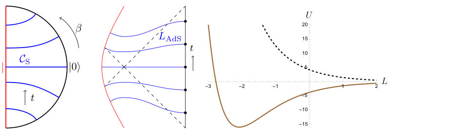
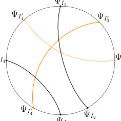
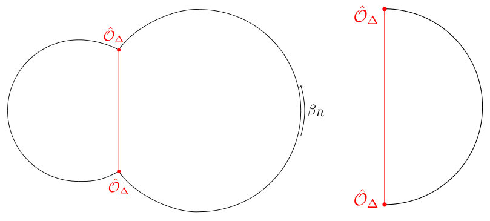
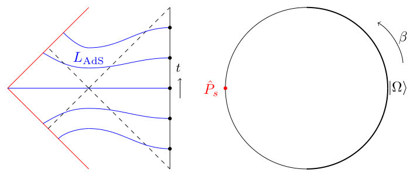
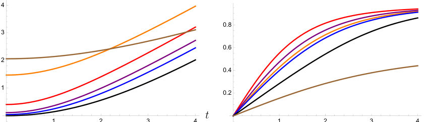
Summary. This paper constructs a family of deformed SYK models using the q-Askey scheme of orthogonal polynomials and maps them to specific gravitational backgrounds like sine dilaton gravity. It provides a holographic dictionary relating quantum chaos (Krylov complexity) and entanglement to geometric features like Einstein-Rosen bridges and ETW branes.
Why it may be interesting. not directly relevant
Main problem. The paper seeks to provide a systematic microscopic construction and bulk holographic interpretation for the full hierarchy of q-Askey deformations of the double-scaled SYK (DSSYK) model.
Main result. The authors demonstrate that these deformations correspond to specific bulk geometries, such as sine dilaton gravity with End-Of-The-World (ETW) branes, and show that Krylov complexity matches the length of Einstein-Rosen bridges in these backgrounds.
Method. The study employs the double-scaling limit, ensemble averaging, chord diagrammatic methods, and the theory of basic hypergeometric orthogonal polynomials (the q-Askey scheme) alongside algebraic approaches using von Neumann algebras.
Model / system. The primary model is the q-Askey deformed Double-Scaled SYK (DSSYK) model, which involves a large number of Majorana fermions with all-to-all interactions and deformations described by the Askey-Wilson scheme.
Key observables. Krylov complexity (spread complexity), entanglement entropy, energy spectrum (continuous and discrete), and the semiclassical partition function.
Important parameters / regimes. Deformation parameters (t_i), the q-deformation parameter, the number of fermions (n_F), the double-scaling parameter (lambda), and temperature (beta).
Assumptions / limitations. The analysis relies on the large N limit and the double-scaling limit; it also assumes the validity of the chord diagrammatic expansion for evaluating expectation values.
Figures summary. Figure 16 illustrates the entanglement of ETW branes from both Lorentzian and Euclidean perspectives, showing the distance between the boundary and the brane.
Paper structure. The paper begins with the microscopic construction of the q-Askey deformed SYK Hamiltonian, moves to the derivation of the chord algebra and its relation to orthogonal polynomials, explores the holographic interpretation of Krylov complexity and entanglement entropy, and concludes with the study of the adjoint deformation and its connection to gauge theory.
We construct families of deformations of the double-scaled SYK (DSSYK) model and investigate their bulk interpretation. We introduce microscopic deformations of the SYK model which, after ensemble averaging and in the double-scaling limit, are described by a transfer matrix encoding the recurrence relations of basic orthogonal polynomials in the q-Askey scheme. For certain families of deformations in the semiclassical limit at finite temperature, the chord number (encoding Krylov complexity) corresponds to the length of an Einstein-Rosen bridge connecting an End-Of-The-World brane to an anti-de Sitter asymptotic boundary. By increasing one of the deformation parameters, the models eventually exhibit discrete energy levels, signaling a new geometric transition in sine dilaton gravity. Via the SYK-Schur duality, Krylov complexity also admits a representation-theoretic interpretation as the spread of the SU(2) spin in the index of an $\mathcal{N}=2$ SU(2) gauge theory. We study the operator algebras of the deformed theories. The algebras can be type II$_1$ or type I$_\infty$ factors, depending on the operators that are included. The entanglement entropy between the type II$_1$ algebras for a pure state manifests as an extremal surface through the Ryu-Takayanagi formula. We discuss connections between our results and the emergence of baby universes in the bulk.
Authors: Ludovico Lami, Bartosz Regula, Ryuji Takagi
Type: theory · Category: quantum information and computing · PDF: https://arxiv.org/pdf/2605.15174v1
Analysis basis: full PDF text, analyzed in chunks
Topic relevance: entanglement & information structure 3/5
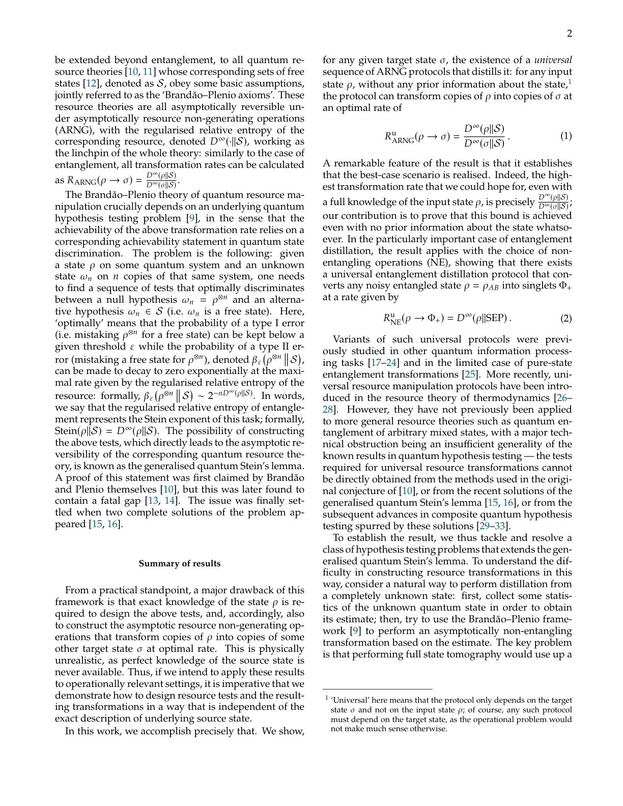
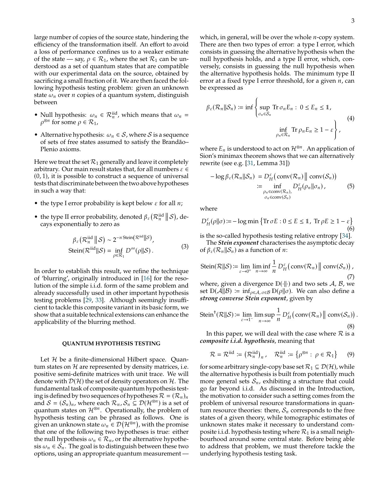
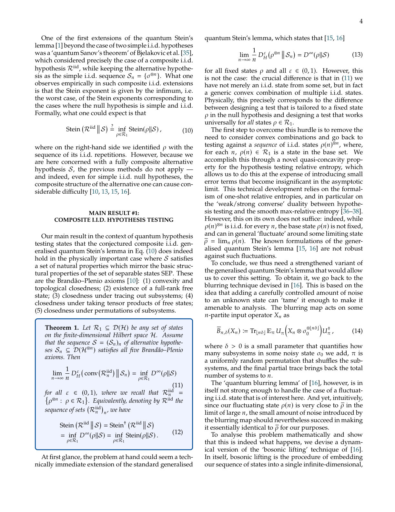
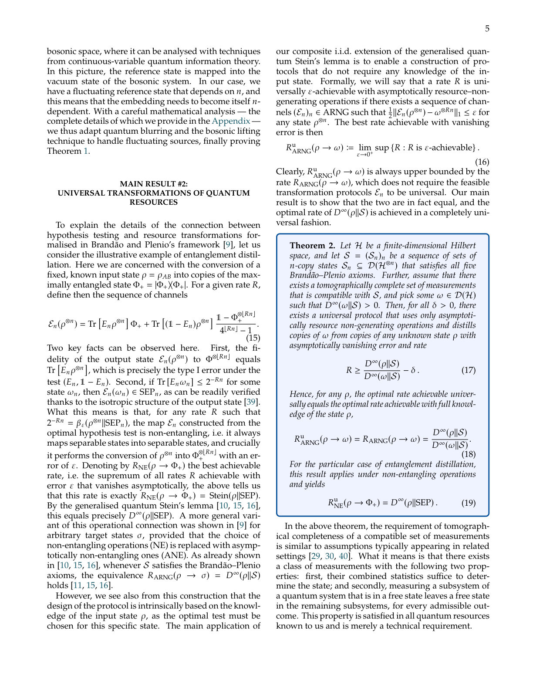
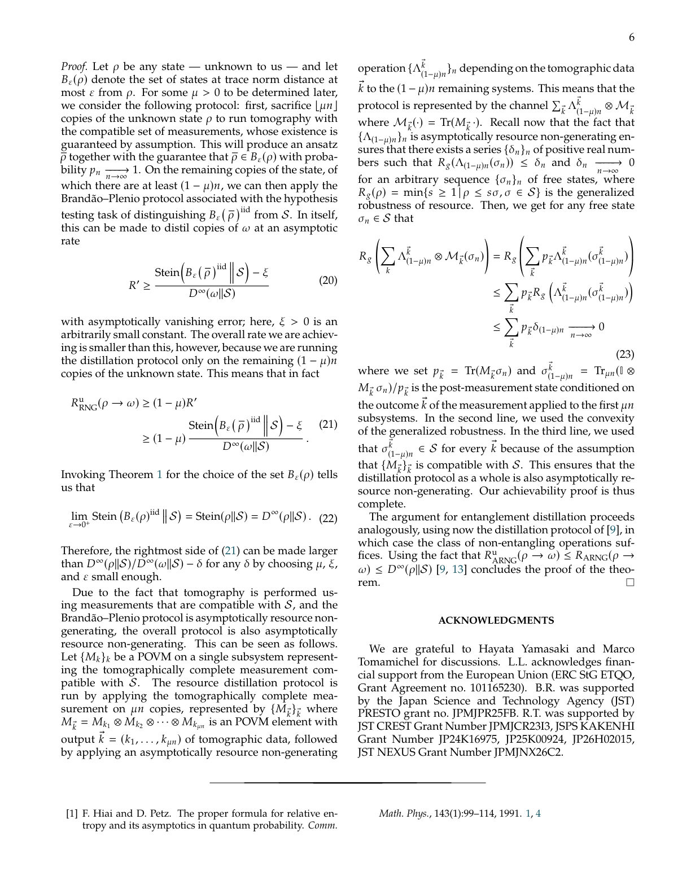
Summary. This paper demonstrates that quantum resource distillation, such as entanglement purification, can be performed universally. It proves that one can achieve the optimal distillation rate even when the input state is completely unknown, provided the protocol uses a specific sequence of operations. This result is achieved by extending the quantum Stein's lemma to handle unknown i.i.d. source states.
Why it may be interesting. This is highly relevant for quantum information theorists as it provides a robust, 'black-box' way to perform entanglement purification and other resource manipulations without needing to characterize the source state beforehand.
Main problem. The paper addresses the non-universality of quantum resource distillation, where existing optimal protocols require precise prior knowledge of the input noisy state to achieve optimal rates.
Main result. The authors prove that universal quantum resource distillation is possible, achieving the same optimal distillation rate as the state-specific case without any prior knowledge of the input state.
Method. The proof utilizes an extension of the generalized quantum Stein's lemma to a composite setting, combined with one-shot quantum information theory and a refined blurring technique.
Model / system. The work is framed within the framework of quantum resource theories (QRT) using Brandao-Plenio axioms, specifically focusing on Asymptotically Resource Non-Generating (ARNG) and Asymptotically Non-Entangling (ANE) operations.
Key observables. Distillation rate, Type I and Type II error probabilities, and entropic measures such as regularized relative entropy of entanglement and Umegaki relative entropy.
Important parameters / regimes. The asymptotic limit of n copies (n to infinity), the error threshold epsilon, and the smoothing parameters delta and mu.
Assumptions / limitations. The sequence of free states must satisfy the Brandao-Plenio axioms, and there must exist a tomographically complete set of measurements compatible with the resource theory.
Paper structure. The paper introduces the problem of non-universality, establishes a connection to composite quantum hypothesis testing, proves a new version of the generalized quantum Stein's lemma, and then applies this to demonstrate universal distillation rates for entanglement.
The performance of quantum resource manipulation protocols, including key examples such as distillation of quantum entanglement, is measured in terms of the rate at which desired target states can be produced from a given noisy state. However, to achieve optimal rates, known protocols require precise tailoring to the quantum state in question, demanding a perfect knowledge of the input and allowing no errors in its preparation. Here we show that distillation of quantum resources in the framework of resource non-generating operations can be performed universally: optimal rates of distillation can be achieved with no knowledge of the input state whatsoever, certifying the robustness of quantum resource distillation. The findings apply in particular to the purification of quantum entanglement under non-entangling maps, where the optimal rates are governed by the regularised relative entropy of entanglement. Our result relies on an extension of the generalised quantum Stein's lemma in quantum hypothesis testing to a composite setting where the null hypothesis is no longer a fixed quantum state, but is rather composed of i.i.d. copies of an unknown state. The solution of this asymptotic problem is made possible through new developments in one-shot quantum information and a refinement of the blurring technique from [Lami, arXiv:2408.06410].
Authors: Ting Zhang, Jinchuan Hou, Xiaofei Qi
Type: theory · Category: quantum information and computing · PDF: https://arxiv.org/pdf/2605.14299v1
Analysis basis: full PDF text, analyzed in chunks
Topic relevance: correlated / nonlocal dissipation 2/5 · entanglement & information structure 2/5 · methods for driven-dissipative 2/5 · non-equilibrium dynamics 2/5
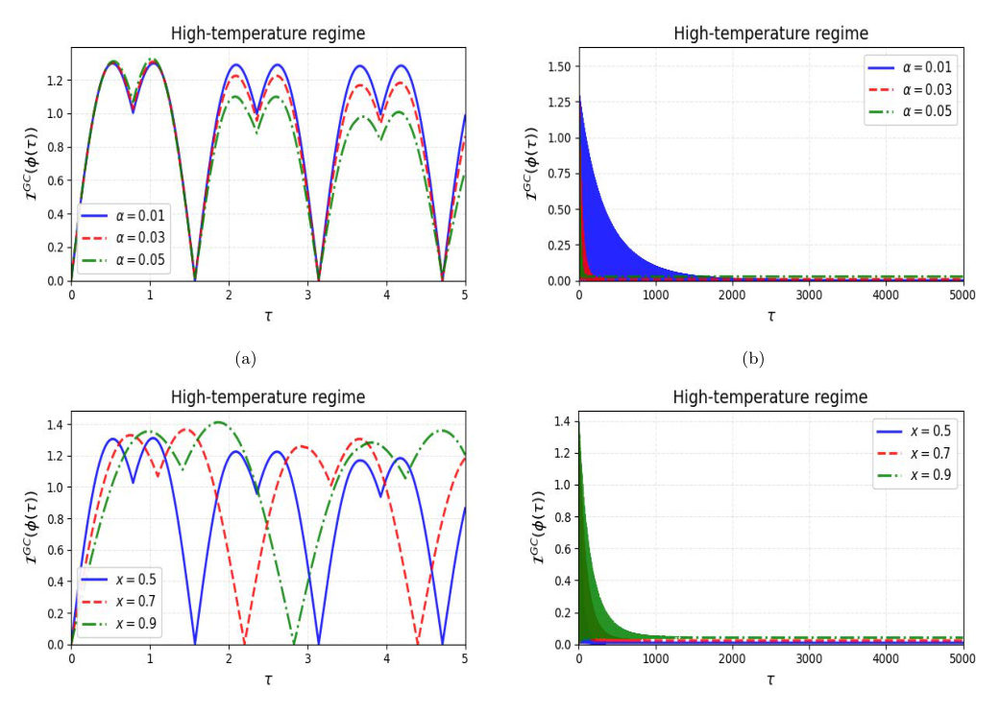
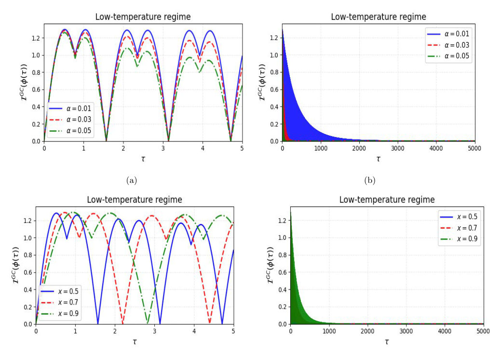
Summary. This paper establishes a resource theory to quantify the 'imaginarity' of Gaussian quantum channels. It introduces three new, computationally efficient measures and applies them to study how the presence of complex numbers evolves in a Quantum Brownian Motion model. The results show that imaginarity can oscillate and decay depending on the temperature and coupling strength of the environment.
Why it may be interesting. This work is highly relevant for researchers in open quantum systems and quantum optics as it provides a new way to quantify a fundamental aspect of quantum mechanics (complex numbers) through the lens of resource theory and explores its dynamics in dissipative environments.
Main problem. The paper aims to develop a comprehensive resource theory for quantifying the 'imaginarity' (the presence of complex numbers) of Gaussian quantum channels in continuous-variable systems.
Main result. The authors propose two frameworks and three distinct, computable measures of imaginarity ($I_{GC}^s, I_{GC}^d, I_{GC}^c$) that satisfy the requirements of faithfulness and monotonicity, and demonstrate their application to Quantum Brownian Motion.
Method. The study uses the mathematical framework of Gaussian superchannels, Heisenberg-Weyl algebra, and matrix representations of channel parameters to derive necessary and sufficient conditions for realness and to construct new resource measures.
Model / system. The primary models are $n$-mode bosonic Gaussian channels and Gaussian superchannels, with a specific application to a one-mode Quantum Brownian Motion (QBM) model interacting with an Ohmic reservoir.
Key observables. Imaginarity measures ($I_{GC}^s, I_{GC}^d, I_{GC}^c$) and the dynamical evolution of these measures over time.
Important parameters / regimes. Channel parameters ($T, N, d$), dimensionless time ($ au$), coupling strength ($\alpha$), non-Markovianity parameter ($x = \omega_c/\omega_0$), and temperature regimes (high vs. low temperature).
Assumptions / limitations. The derivation assumes the standard matrix representation of Gaussian superchannels and focuses on the weak oscillator-bath coupling regime for the QBM application.
Figures summary. Figure 1 shows the periodic, decaying oscillations of the $I_{GC}^c$ measure in a high-temperature reservoir for various $\alpha$ and $x$ values; Figure 2 shows similar oscillations in a low-temperature reservoir that asymptotically approach zero.
Paper structure. The paper introduces the problem of imaginarity in Gaussian channels, establishes two resource theory frameworks, defines and proves the validity of three new measures, and concludes with a dynamical study of the QBM Gaussian channel.
Complex numbers play an indispensable role in quantum mechanics and quantum information, as validated by both theoretical analysis and experimental verification. Since quantum information processing inherently relies on quantum channels, the resource theory for quantum channels is equally fundamental to that for quantum states. In this paper, we propose two frameworks for quantifying the imaginarity of Gaussian channels. The first framework regards all real superchannels as free superchannels. Within this setting, we introduce two concrete imaginarity measures for Gaussian channels: I_s^GC based on existing imaginarity measures of Gaussian states, and I_d^GC derived directly from the intrinsic parameters of Gaussian channels, which enjoys high computational simplicity. The second framework adopts only a proper subset of real superchannels as free superchannels. Under this framework, we put forward another imaginarity measure I_c^GC , which is fully determined by the inherent parameters of Gaussian channels and features continuity as well as tractable computation. As a practical application, we employ I_c^GC to investigate the dynamical behavior of Quantum Brownian Motion Gaussian channels throughout the entire evolutionary process.
Authors: David Navia, Ángel S. Sanz
Type: theory · Category: other · PDF: https://arxiv.org/pdf/2605.14181v1
Analysis basis: full PDF text, analyzed in chunks
Topic relevance: methods for driven-dissipative 2/5 · non-equilibrium dynamics 2/5 · quantum measurements 2/5 · correlated / nonlocal dissipation 1/5

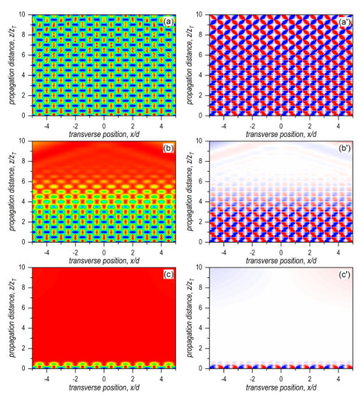
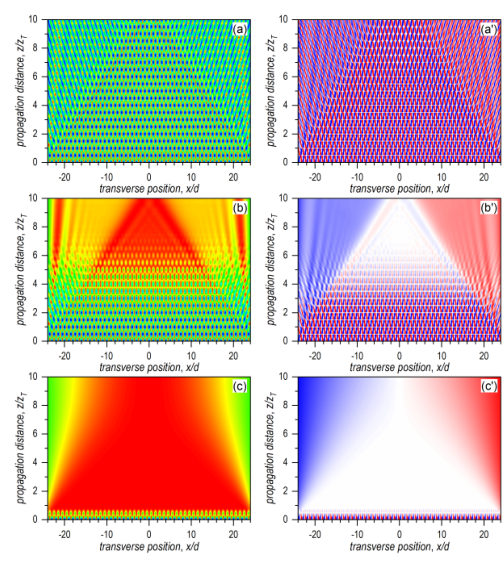
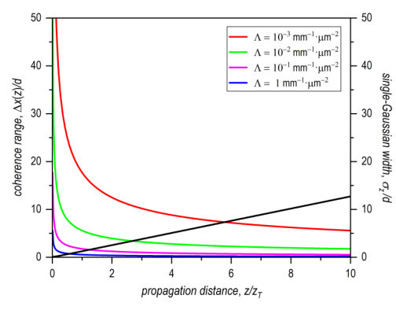
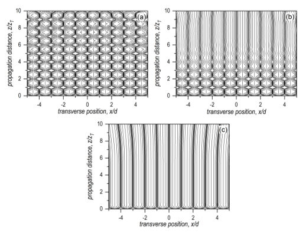
Summary. This paper explores how environmental interactions suppress the Talbot effect in matter-wave diffraction. It demonstrates that while interference fringes disappear under decoherence, the underlying organized transport of probability flow can persist. This distinction offers a new way to diagnose the impact of decoherence using local hydrodynamic observables.
Why it may be interesting. It provides a novel local characterization of decoherence by distinguishing between the decay of phase coherence and the decay of dynamical transport organization, which is highly relevant for understanding the quantum-to-classical transition in atom interferometry.
Main problem. Investigating how environmentally induced decoherence suppresses matter-wave Talbot interference and determining if the loss of interference visibility occurs simultaneously with the loss of organized probability flow.
Main result. The study finds that the loss of visible interference (global observable) and the loss of dynamical pathway separation (local observable) do not necessarily occur simultaneously; flux-channel structures can persist even after interference features are strongly reduced.
Method. A hydrodynamic/Bohmian representation of the paraxial matter-wave equation is used to analyze probability-flow streamlines and intensity distributions.
Model / system. An atomic beam (monochromatic, non-interacting) diffracted by a periodic grating of Gaussian apertures, modeled using a Lindblad-type master equation with an effective position-localization term to simulate environmental decoherence.
Key observables. Intensity distributions (Talbot carpet), transverse-momentum distributions, local probability-flow streamlines, and transverse momentum fields.
Important parameters / regimes. Decoherence strength (Lambda), coherence range (Delta x), Talbot distance (zT), and the transition from coherent to far-field diffraction regimes.
Assumptions / limitations. The system is treated within the paraxial approximation, assuming a monochromatic, non-interacting, and spinless atomic beam.
Figures summary. Figures show the transition of the Talbot carpet and momentum maps under increasing decoherence, the comparison of coherence range to Gaussian width, and the evolution of probability-flow streamlines from organized channels to spreading patterns.
Paper structure. The paper introduces the problem of decoherence in Talbot interference, defines the hydrodynamic/Bohmian framework and the decoherence model, presents numerical results for intensity and momentum maps, analyzes the persistence of flow channels, and concludes with the far-field asymptotic behavior.
We investigate the suppression of matter-wave Talbot interference under environmentally induced decoherence. The system is modeled as an atomic beam diffracted by a periodic grating, whose transverse dynamics is described within the paraxial approximation. Environmental coupling is introduced through an effective open-system model that exponentially damps spatial coherences between diffracted components, allowing a continuous interpolation between the coherent Talbot regime and the incoherent far-field diffraction limit. Besides the usual intensity and transverse-momentum distributions, we analyze the local probability flow associated with the diffracted matter wave. The corresponding Bohmian, or hydrodynamic, representation is used here as a diagnostic tool fully equivalent to the standard quantum description, with no additional assumptions beyond the probability current of the paraxial wave field. In the present Talbot geometry, this analysis shows how decoherence progressively suppresses the carpet structure and smooths the transverse-momentum distribution, while the flow may remain organized into channels determined by the grating periodicity. The results illustrate, in a periodic matter-wave Talbot geometry, that the loss of visible interference and the loss of dynamical pathway separation need not occur simultaneously. In particular, flux-channel structures can persist in parameter regimes where multi-slit interference features have already been strongly reduced. This distinction provides a local characterization of decoherence in matter-wave Talbot interferometry and complements previous trajectory-based analyses of coherence loss in simpler interference and confined geometries.
Authors: Amit Das, Sobhan Sounda
Type: theory · Category: quantum information and computing · PDF: https://arxiv.org/pdf/2605.14691v1
Analysis basis: full PDF text, analyzed in chunks
Topic relevance: entanglement & information structure 2/5 · methods for driven-dissipative 2/5 · non-equilibrium dynamics 2/5
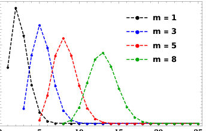
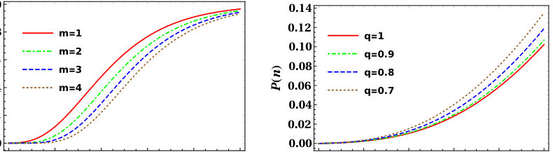
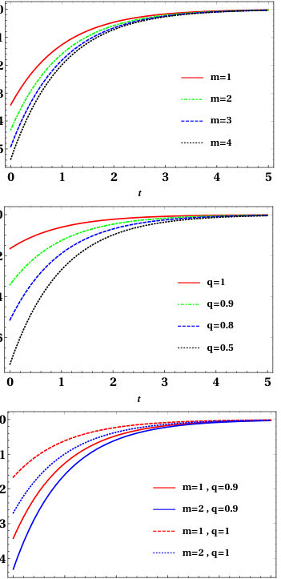
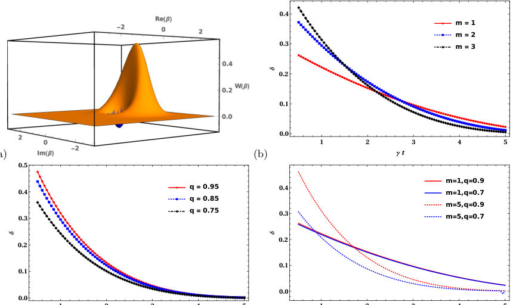
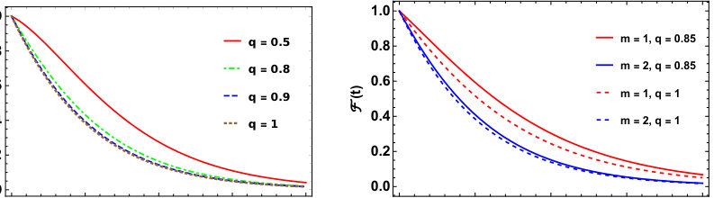
Summary. This paper explores how q-deformed photon-added coherent states behave under environmental dissipation. It demonstrates that both the deformation parameter and the number of added photons can be tuned to enhance the stability of nonclassical features against photon loss.
Why it may be interesting. This paper is relevant to researchers in open quantum systems and quantum optics as it demonstrates how nonlinear deformations and photon addition can be used to engineer states that are more resilient to environmental noise.
Main problem. The study investigates the dynamics of nonclassicality and the robustness of q-deformed photon-added coherent states (DPACS) when subjected to dissipative decoherence.
Main result. The researchers found that increasing the number of added photons (m) enhances robustness against decoherence, while q-deformation suppresses higher photon numbers, concentrating the distribution and providing greater resilience to the dissipative environment.
Method. The study uses the f-oscillator approach to construct the states and employs the Lindblad master equation and Kraus operators to model the evolution of the density matrix under a photon-loss channel.
Model / system. The system consists of a q-deformed harmonic oscillator interacting with a dissipative photon-loss environment at zero temperature.
Key observables. Photon number distribution (PND), Mandel's Q parameter, Wigner function (negative volume), Fidelity, and von Neumann entropy.
Important parameters / regimes. q (deformation parameter), m (number of added photons), alpha (coherent amplitude), and gamma (decay rate).
Assumptions / limitations. The study assumes a zero-temperature bath with no thermal photon input and a simple photon-loss channel.
Figures summary. Figure 1 shows the initial photon number distribution for various q, m, and alpha; Figure 2 shows the time evolution of the photon distribution under decoherence; Figure 6 shows the time evolution of von Neumann entropy for different m and q values.
Paper structure. The paper begins with the construction of DPACS using q-deformed algebra, followed by the modeling of decoherence via a master equation, an analysis of photon statistics and Wigner functions, and finally an investigation of entropy and fidelity evolution.
In this study, we explore the behavior of photon added coherent states in a deformed harmonic oscillator subjected to dissipative decoherence. We use $q-$deformation as our nonlinear function to model our system. By adjusting the deformation parameter, we show that $q-$deformed photon added coherent state (DPACS) exhibit greater nonclassicality and resilience to decoherence compared to those of a standard harmonic oscillator. Additionally, we investigate the nonclassical properties and entanglement of DPACS under decoherence induced by interaction with a dissipative photon-loss environment.
Authors: A. Vourdas
Type: theory · Category: quantum information and computing · PDF: https://arxiv.org/pdf/2605.14820v1
Analysis basis: full PDF text, analyzed in chunks
Topic relevance: entanglement & information structure 2/5 · methods for driven-dissipative 2/5 · quantum measurements 2/5
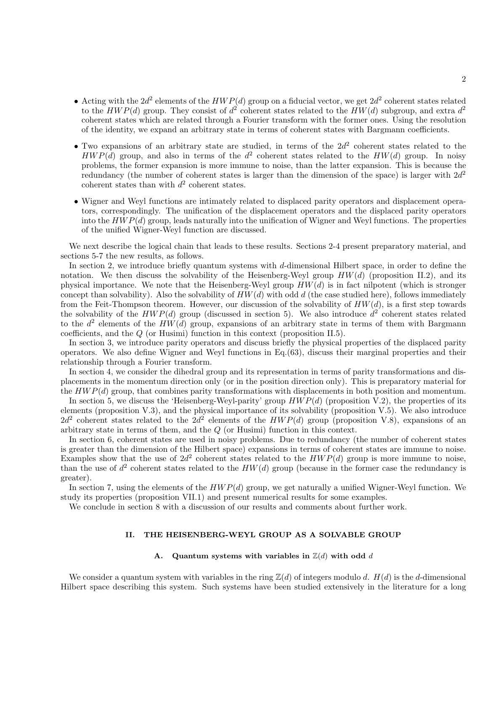
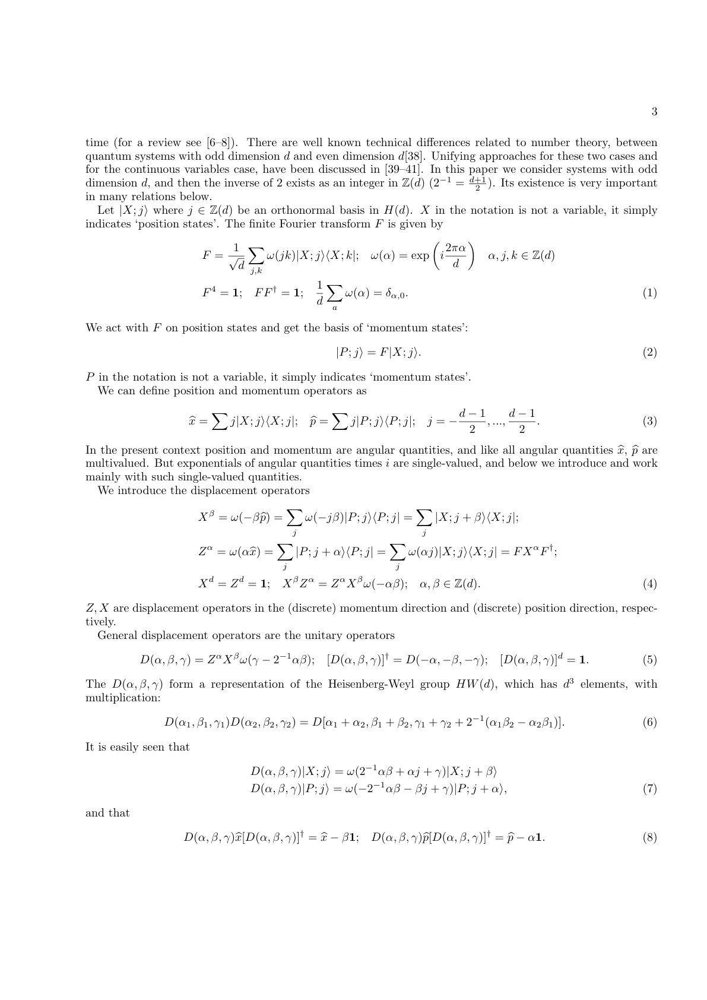
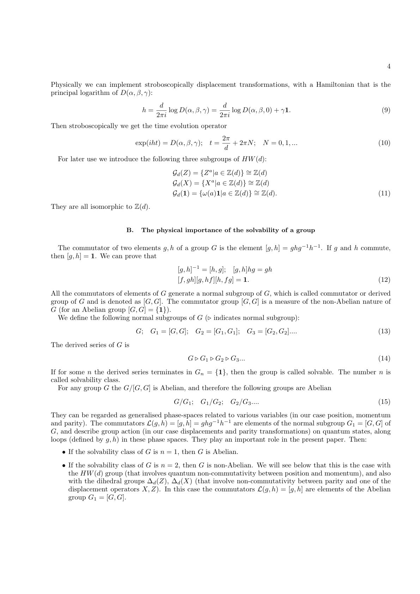
Summary. The paper proposes an enlarged group structure, the Heisenberg-Weyl-parity group, which integrates parity transformations into the standard Heisenberg-Weyl framework. This enlargement allows for a unified Wigner-Weyl function and a larger set of coherent states that are more robust against numerical or environmental noise. The work establishes a formal link between the symmetries of a dihedral group and discrete quantum phase space.
Why it may be interesting. This is highly relevant for quantum information and open quantum systems because it provides a new, redundant framework for state representation that is more resilient to noise, and offers a unified phase-space formalism for discrete quantum systems.
Main problem. The paper aims to extend the Heisenberg-Weyl group by incorporating parity transformations to create a larger Heisenberg-Weyl-parity group, seeking to unify the Wigner and Weyl functions.
Main result. The author introduces the Heisenberg-Weyl-parity group HWP(d), showing it is a solvable group of class 3, and demonstrates that its associated 2d^2 coherent states provide a more noise-robust expansion for quantum states than the standard d^2 set.
Method. The study employs group theory (semidirect products, commutator analysis, and solvability classes), Fourier analysis, and numerical simulations in MATLAB to evaluate noise robustness.
Model / system. The system consists of a finite-dimensional Hilbert space H(d) where d is an odd integer, utilizing a discrete phase space based on the ring of integers modulo d.
Key observables. Wigner-Weyl function, Wigner function, Weyl function, Husimi Q-function, and Bargmann coefficients.
Important parameters / regimes. Dimension d (specifically odd d), displacement parameters alpha and beta, and noise magnitude E.
Assumptions / limitations. The dimension d is assumed to be odd to ensure the existence of 2^-1 in the ring Z(d); the fiducial vector must not be an eigenstate of the parity operator.
Figures summary. Table I provides numerical values for Bargmann coefficients, the extended Q-function, and the unified Wigner-Weyl function for a specific state.
Paper structure. The paper introduces the HWP(d) group structure, analyzes its algebraic properties (solvability and non-nilpotency), constructs associated coherent states, demonstrates the unification of Wigner and Weyl functions, and concludes with a numerical study on noise robustness.
The Heisenberg-Weyl group $HW(d)$ related to a $d$-dimensional Hilbert space $H(d)$, is enlarged into the Heisenberg-Weyl-parity group $HWP(d)$ that incorporates parity transformations. It consists of $2d^3$ elements, of which $d^3$ elements belong to the $HW(d)$ subgroup, and extra $d^3$ elements which are related through a Fourier transform with the former ones. It is shown that $HWP(d)$ is a generalised version of the dihedral group. The properties of operators that combine displacements and parity, are discussed. $HWP(d)$ is shown to be a solvable group, and commutators of its elements perform displacement and parity transformations of quantum states, along loops in the discrete phase space.$2d^2$ coherent states related to the $HWP(d)$ group are introduced, which consist of $d^2$ coherent states related to the $HW(d)$ subgroup, and extra $d^2$ coherent states which are related through a Fourier transform with the former ones. In noisy cases, expansion of an arbitrary state in terms of the $2d^2$ coherent states with Bargmann coefficients, is advantageous in comparison to expansion in terms of the $d^2$ coherent states related to $HW(d)$. One of the consequences of the $HWP(d)$ group, is a natural unification of the Wigner and Weyl functions. The properties of the unified Wigner-Weyl function are discussed.
Authors: Ainesh Bakshi, Arpon Basu, Pravesh Kothari, Anqi Li
Type: theory · Category: quantum information and computing · PDF: https://arxiv.org/pdf/2605.14994v1
Analysis basis: full PDF text, analyzed in chunks
Topic relevance: analog quantum simulation 2/5 · exotic spin models in light-matter 2/5 · entanglement & information structure 1/5
Summary. The paper proves sharp spectral bounds for Kikuchi graphs, resolving several conjectures regarding their Laplacian eigenvalues. These mathematical bounds are used to derive new, more efficient approximation algorithms for the Quantum Max Cut and XY Hamiltonians.
Why it may be interesting. This paper provides fundamental algorithmic improvements for approximating the ground state energy of 2-local Hamiltonians, which is a central problem in quantum complexity and many-body physics.
Main problem. Establishing sharp upper bounds on the eigenvalues of Kikuchi graphs (token graphs) and applying these spectral bounds to improve approximation ratios for Quantum Max Cut and XY Hamiltonians.
Main result. The authors prove that the maximum eigenvalue of the signed and unsigned Laplacian of a level-k Kikuchi graph is at most m+k, resolving four recent conjectures and providing new approximation ratios for Quantum Max Cut (0.614) and the XY Hamiltonian (0.674).
Method. The proof utilizes induction on the number of tokens (k) and an edge-gradient technique involving the differentiation of eigenvectors across edges, combined with spectral analysis of additive compound operators.
Model / system. The study focuses on 2-local quantum Hamiltonians, specifically the Quantum Max Cut (QMC) Hamiltonian, the XY Hamiltonian, and the EPR Hamiltonian, modeled using the mathematical framework of Kikuchi graphs.
Key observables. Maximum eigenvalues of the Laplacian and adjacency matrices of Kikuchi graphs, and approximation ratios for Hamiltonian energy minimization.
Important parameters / regimes. Number of edges (m), number of tokens (k), and the parameter (r) defining the order of the Kikuchi graph/operator.
Assumptions / limitations. The results are derived for simple graphs G and rely on the positive semidefiniteness of the operators involved.
Paper structure. The paper introduces the spectral problem and related conjectures, presents the main inductive proof for eigenvalue bounds using edge-gradients, applies these bounds to quantum Hamiltonian approximation ratios, and concludes with improvements to Brouwer's conjecture.
We prove that the maximum eigenvalue of the (both signed and unsigned) Laplacian of level $k$ Kikuchi graph of any graph $G$ with $m$ edges is at most $m+k$. This confirms four recent conjectures of Apte, Parekh, and Sud. As applications, we obtain that tensor products of one and two qubit product states achieve an approximation ratio of $5/8$ for Quantum Max Cut and $5/7$ for the XY Hamiltonian. Moreover, combining our bounds with the algorithms analyzed by Apte, Parekh, and Sud, yields efficient algorithms achieving an approximation ratio of $0.614$ for Quantum Max Cut and $0.674$ for the XY Hamiltonian. Finally, we also make modest progress on Brouwer's conjecture and improve Lew's bound on the sum of the top-$k$ eigenvalues of a Graph Laplacian.
Authors: Ulysse Marquis, Henri Berestycki, Marc Barthelemy
Type: theory · Category: statistical mechanics · PDF: https://arxiv.org/pdf/2605.14914v1
Analysis basis: full PDF text, analyzed in chunks
Topic relevance: non-equilibrium dynamics 2/5 · non-equilibrium universality 2/5
Summary. This paper demonstrates that spatial randomness in growth rates actually accelerates the propagation of FKPP fronts rather than slowing them down. It identifies a universal statistical response where the speed increase and position fluctuations scale predictably with the disorder intensity.
Why it may be interesting. not directly relevant
Main problem. The study investigates how quenched (time-independent) spatial randomness in the growth rate affects the propagation speed and fluctuations of FKPP fronts.
Main result. Quenched randomness increases the average propagation speed according to a universal scaling law v = v0 + a*sigma^2, and the front position exhibits diffusive fluctuations with a coefficient D scaling as sigma^2.
Method. Numerical integration of the 1D FKPP equation using an explicit method, combined with statistical analysis of velocity power spectra, autocorrelation functions, and ensemble averaging.
Model / system. A one-dimensional Fisher-Kolmogorov-Petrovskii-Piskunov (FKPP) equation with a spatially quenched, zero-mean, delta-correlated random growth rate field.
Key observables. Asymptotic velocity (v), front position (x(t)), effective diffusion coefficient (D), instantaneous speed distribution (skewness/variance), and velocity power spectrum S(omega).
Important parameters / regimes. Disorder intensity (sigma), homogeneous velocity (v0), and the universal prefactors (a and b).
Assumptions / limitations. The disorder is assumed to be purely spatial (quenched) and does not depend on the interface height, distinguishing it from standard quenched KPZ models.
Figures summary. Figure 1 shows the increase in front progression compared to the homogeneous case and the resulting front shape; Figure 2 displays the histogram of instantaneous speeds and the speed autocorrelation function.
Paper structure. The paper introduces the FKPP model in random media, describes the numerical simulation setup, presents the scaling laws for velocity and diffusion, analyzes the spectral properties of velocity fluctuations, and compares random vs. periodic disorder.
We study numerically the evolution of one-dimensional FKPP fronts initiated from steep initial conditions in the presence of a quenched random growth rate. Compared to both the homogeneous case (with velocity $v_0$) and deterministic disorder, quenched randomness increases the average propagation speed. We show that the velocity shift relative to the homogeneous case scales linearly with the disorder variance $σ^2$, with a universal prefactor -- independent of the specific distribution of the disorder -- such that $v = v_0 + a σ^2$, with $a \approx 0.02432 \pm 0.00002$. Moreover, the front position exhibits diffusive fluctuations across disorder realizations. The corresponding effective diffusion coefficient scales quadratically with $σ$, $D = \frac{b^2 σ^2}{2}$, with $b \approx 0.223 \pm 0.002$. These results suggest a universal statistical response of FKPP fronts to quenched heterogeneity.
Authors: Michael R. Geller, Victoria S. Ordonez, Yohannes Abate
Type: theory · Category: quantum information and computing · PDF: https://arxiv.org/pdf/2605.14822v1
Analysis basis: full PDF text, analyzed in chunks
Topic relevance: analog quantum simulation 2/5 · quantum measurements 2/5
Summary. This paper shows that if quantum computers can be coupled to qubits with nonlinear, state-dependent dynamics, they could solve computationally hard problems like 3SAT and #SAT in polynomial time. The authors propose specific nonlinear Hamiltonians and demonstrate how they can be used for efficient state discrimination. These models are physically motivated by the mean-field dynamics found in ultracold atom systems.
Why it may be interesting. It explores how non-standard, state-dependent dynamics (common in mean-field many-body systems like BECs) could fundamentally alter the computational complexity landscape of quantum computing.
Main problem. Investigating whether coupling a fault-tolerant quantum computer to ancilla qubits evolving via nonlinear Schrödinger equations can enable the efficient solution of NP-complete and #P-complete Boolean satisfiability problems.
Main result. The authors demonstrate that specific single-qubit nonlinear Hamiltonians can solve UNIQUE SAT, 3SAT, and #SAT in polynomial time by enabling efficient quantum state discrimination.
Method. The study uses an 'inverse problem' approach to construct nonlinear Hamiltonians from desired Bloch sphere velocity fields and applies these to an encoding circuit that maps the number of satisfying assignments to ancilla qubit amplitudes.
Model / system. A scalable, fault-tolerant quantum computer coupled to ancilla qubits undergoing mean-field type nonlinear dynamics, with potential implementation in ultracold atom systems.
Key observables. The number of satisfying assignments (s), Bloch vector components (x, y, z), and expectation values of Pauli matrices.
Important parameters / regimes. The number of qubits (n), gate time (tg), coupling strength (g), and error parameter (epsilon).
Assumptions / limitations. The analysis assumes a noise-free limit, a scalable and fault-tolerant implementation, and large n.
Figures summary. Figure 1 shows the circuit for encoding satisfying assignments; Figure 2 illustrates various nonlinear velocity fields including Torsion, Morse-Smale, and Supercritical Pitchfork models.
Paper structure. The paper introduces the nonlinear model, defines the state encoding procedure, analyzes three distinct nonlinear Hamiltonian models (Torsion, Morse-Smale, and Pitchfork) to solve specific complexity classes, and concludes with complexity and implementation notes.
We consider an extended model of quantum computation where a scalable fault-tolerant quantum computer is coupled to one or more ancilla qubits that evolve according to a nonlinear Schrödinger equation. Following the approach of Abrams and Lloyd, an efficient quantum circuit evaluating an $n$-bit Boolean function in conjunctive normal form is used to prepare an ancilla encoding its number $s$ of satisfying assignments ($0 \le s \le 2^n$). This is followed by a nonlinear quantum state discrimination gate on the ancilla qubit that is used to learn properties of $s$. Here we consider three types of state discriminators generated by different nonlinear Hamiltonians. First, given a restricted Boolean satisfiability problem with the promise of at most one satisfying assignment ($ 0 \le s \le 1$), we show that a qubit with $\langle σ^z \rangle σ^z$ nonlinearity can be used to efficiently determine whether $s = 0$ or $s = 1$, solving the UNIQUE SAT problem. Here $\langle A \rangle := \langle ψ| A |ψ\rangle $ denotes expectation in the current state. UNIQUE SAT is NP-hard under a randomized polynomial-time reduction (of course any discussion of complexity assumes a scalable, fault-tolerant implementation). Second, for unrestricted satisfiability problems with $ 0 \le s \le 2^n$, a Hamiltonian with $ \langle σ^x \rangle σ^y - \langle σ^y \rangle σ^x$ nonlinearity can be used to efficiently determine whether $s=0$ or $s>0$, thereby solving 3SAT, which is NP-complete. Finally, we show that $ \langle σ^y \rangle \langle σ^z \rangle σ^x - \langle σ^x \rangle \langle σ^z \rangle σ^y $ nonlinearity can be used to efficiently measure $s$ and solve #SAT, which is #P-complete. The nonlinear models are of mean field type and might be simulated with ultracold atoms.
Authors: Jinchang Liu, Elias X. Huber, Zhenyu Du, Xingjian Zhang, Xiongfeng Ma
Type: theory · Category: quantum information and computing · PDF: https://arxiv.org/pdf/2605.15106v1
Analysis basis: full PDF text, analyzed in chunks
Topic relevance: entanglement & information structure 2/5 · quantum measurements 2/5
Summary. This paper presents a scalable protocol for the device-independent self-testing of generic multipartite quantum states. By overcoming the exponential sample complexity barrier and resolving measurement sign inconsistencies, it enables the efficient certification of large-scale quantum networks using only polynomial resources.
Why it may be interesting. This work is highly relevant for quantum networks and distributed quantum computing, as it provides a scalable way to certify large-scale quantum resources without trusting the underlying hardware.
Main problem. Existing self-testing methods for generic n-partite quantum states suffer from an exponential scalability barrier, requiring an exponential number of samples relative to the system size.
Main result. The authors introduce a protocol that robustly self-tests almost all n-qubit states with only polynomial sample complexity, overcoming the local-transpose obstacle.
Method. The protocol uses a transpose-braiding test to ensure global consistency of Pauli measurements and a teleportation-based scheme using a linear number of ancillary Bell pairs to evaluate multipartite Pauli measurements.
Model / system. An n-qubit multipartite quantum system shared among n main parties and n auxiliary parties, utilizing a network-assisted architecture with shared Bell pairs.
Key observables. The target observable L, which is an operator induced by randomized multipartite Pauli schemes, and the spectral gap of the observable.
Important parameters / regimes. Sample complexity N scaling polynomially with n and epsilon^-1; precision epsilon; and the spectral gap delta which scales as Omega(n^-2).
Assumptions / limitations. The protocol assumes device-independent (DI) settings where devices are black boxes, requires trusted classical inputs, and is specifically focused on n-qubit states (excluding highly structured states like GHZ).
Figures summary. Figure 1 illustrates the device-independent lifting of a randomized Pauli measurement protocol; Figure 2 shows the physical architecture of the network, the CHSH test implementation, and the transpose-braiding setup.
Paper structure. The paper identifies the scalability barrier and the local-transpose obstacle, introduces a new transpose-braiding method and a teleportation-based measurement scheme, proves the efficiency and robustness of the protocol for n-qubit states, and discusses cryptographic applications and future extensions.
Characterizing large quantum systems with minimal assumptions is a central challenge in quantum information science. Self-testing provides the strongest form of certification by identifying the underlying quantum state solely from observed measurement statistics. However, existing self-testing methods for generic $n$-partite states face a scalability barrier, requiring exponentially many samples in the system size. In this work, we overcome this barrier by introducing a protocol that robustly self-tests almost all $n$-qubit states with only polynomial sample complexity. The key ingredient is an efficient scheme for device-independently evaluating multipartite Pauli measurements, which can be implemented using only a linear number of ancillary Bell pairs together with standard projective and Bell measurements, well within the reach of current quantum technology. Beyond self-testing states, our scheme provides a general framework for implementing a wide range of learning and certification protocols in the device-independent setting, thereby opening a scalable route to device-independent quantum information processing in large-scale quantum networks.
Authors: Konstantinos Chalas, F. K. Diakonos, A. S. Kapoyannis
Type: theory · Category: statistical mechanics · PDF: https://arxiv.org/pdf/2605.14861v1
Analysis basis: full PDF text, analyzed in chunks
Topic relevance: non-equilibrium universality 2/5 · non-equilibrium dynamics 1/5
Summary. This paper provides a mathematical framework for generating and analyzing finite point sets with specific fractal dimensions using generalized Lévy flights. It demonstrates how to control scaling regions and suggests that low-multiplicity datasets can effectively represent fractal properties, with applications to simulating critical fluctuations in heavy-ion physics.
Why it may be interesting. not directly relevant
Main problem. Developing a unified framework to analyze the scaling behavior and fractal geometry of finite point sets generated by Lévy-like and truncated Lévy-like flights, specifically controlling the range of the scaling region.
Main result. The study proves that the correlation integral distribution is independent of the number of points in a set and demonstrates that for positive nu, fractal behavior can extend to infinitesimally low scales, making it ideal for low-multiplicity simulations.
Method. Numerical simulations of Lévy-like walks using Markovian procedures, application of the correlation integral C(R) and ring techniques, and mathematical proofs for subsampling and ensemble generation.
Model / system. Lévy-like and truncated Lévy-like flights characterized by a step probability distribution P(r) proportional to r^(-1+nu), implemented in 1D, 2D, and 3D embedding spaces.
Key observables. Correlation integral C(R), fractal correlation dimension dF, and local log-log slopes dF.
Important parameters / regimes. Step exponent nu, multiplicity Nm, embedding dimension d, and step limits a (upper) and b (lower).
Assumptions / limitations. The analysis of Poisson-distributed multiplicities assumes the exclusion of events with zero or one track; the asymptotic form assumes all tracks share the same upper limit a.
Figures summary. Figure 1 compares C(R) distributions for different subsets of a Lévy walk; Figure 3 shows C(R) and local slopes for positive nu; Figure 6 illustrates the impact of limits a and b on local slopes; Figure 12 shows the divergence of slopes for different dimensions.
Paper structure. The paper introduces the Lévy-like flight model, develops mathematical techniques for analyzing finite point sets (subsampling and ensemble generation), investigates the effect of step limits (a and b) on scaling, and concludes with an application to simulating QCD critical fluctuations in heavy-ion collisions.
We study Lévy-like and truncated Lévy-like flights with step probability distribution of the form $r^{-1+ν}$ for negative, positive, and zero $ν$, focusing on the appearance of fractal geometry characteristics in the generated point sets. Forming ensembles of such point sets with fixed multiplicity, we develop simulation techniques leading to the desired value of correlation dimension in a vast continuous interval of scales. In particular, we demonstrate the possibility to produce ensembles of data sets with a low number of points with the needed properties. Furthermore, we show that the positive $ν$ distributions, apart from a region near the upper scale limit, show fractal behaviour that extends to infinitesimally low scales. As an example, we apply our findings to producing simulations relevant to the search for critical fluctuations, related to QCD critical endpoint, in heavy-ion collision experiments.
Authors: Shengsong Xu, Zhenfeng Ouyang, Li Huang, Zhong-Yi Lu
Type: theory · Category: strongly correlated electrons · PDF: https://arxiv.org/pdf/2605.14638v1
Analysis basis: full PDF text, analyzed in chunks
Topic relevance: Kondo & dissipative impurity 2/5
Summary. This paper uses DFT+DMFT to investigate the electronic properties of the different structural phases of Samarium. It reveals that the 4f electrons are highly localized and that the metal exhibits strong correlation effects and non-Fermi liquid characteristics. The results provide a theoretical framework that aligns well with experimental photoemission spectroscopy.
Why it may be interesting. not directly relevant
Main problem. The electronic structure and strong correlation effects of Samarium (Sm) metal in its alpha, beta, and gamma phases are not fully understood due to the complex behavior of its 4f electrons.
Main result. The 4f electrons are found to be well-localized with weak hybridization to conduction electrons, and the system exhibits significant strong correlation effects, including extremely large effective masses and non-Fermi liquid behavior.
Method. The study uses a first-principles DFT+DMFT approach with the WIEN2K program, employing a hybridization expansion continuous-time quantum Monte Carlo (CT-QMC) impurity solver and the maximum entropy method for analytical continuation.
Model / system. The physical system is Samarium (Sm) metal, specifically investigating the alpha (rhombohedral), beta (hcp), and gamma (bcc) structural phases at ambient pressure.
Key observables. Momentum-resolved spectral functions, total and partial (4f) density of states, self-energy functions, valence state histograms, and quasiparticle weight (Z) and effective mass (m*).
Important parameters / regimes. On-site Coulomb interaction (U) of 6.1 eV, Hund's exchange (JH) of 0.835 eV, and spin-orbit coupling (SOC).
Assumptions / limitations. The study uses a single-site DMFT approximation and a simplified double-counting scheme, which may lead to discrepancies with experimental data.
Figures summary. Figure 3 shows the density of states (total, partial 4f, and orbital-resolved) compared to experimental PES/BIS data; Figure 4 displays the imaginary parts of the Matsubara self-energy functions; Figure 5 presents valence state histograms for occupancy and angular momentum.
Paper structure. The paper introduces the problem of Sm electronic structure, describes the DFT+DMFT methodology and parameters, presents results for the three structural phases (DOS, self-energy, and localization), and concludes with a comparison to experimental data.
The electronic structure of Samarium (Sm) was calculated using the density functional theory combined with the single-site dynamical mean-field theory. In this work, we investigated the electronic properties of α, \b{eta} and γ phases at ambient pressure, including the band structures, density of states, self-energy functions and valence state histograms. Our results agree with the experimental data.The calculation shows that the 4f electrons in all these phases are well localized, the Kondo peaks are suppressed and the hybridization between the 4f electrons and conduction electrons are quite weak. Our results also show the strong correlation effect is significant in Sm metal.
← Index · ← Previous · Next →